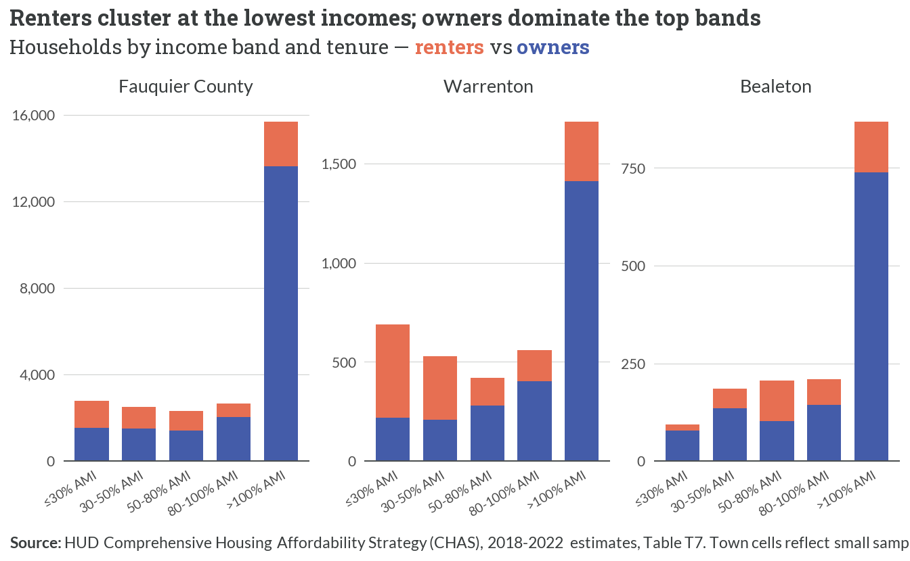
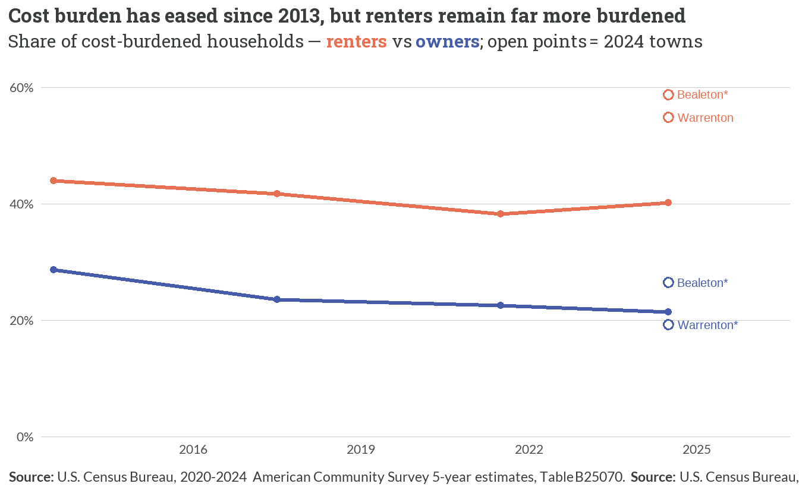
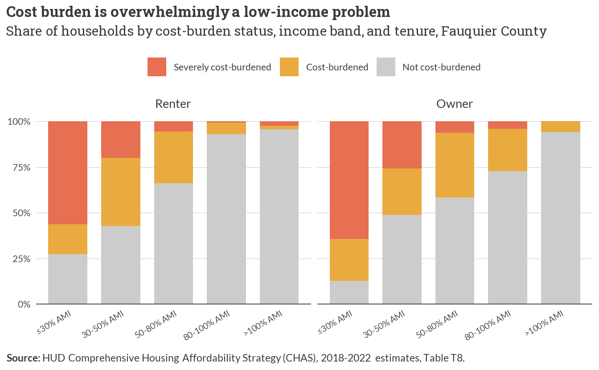
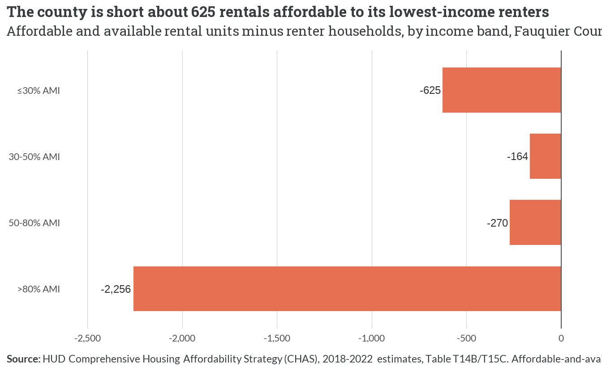
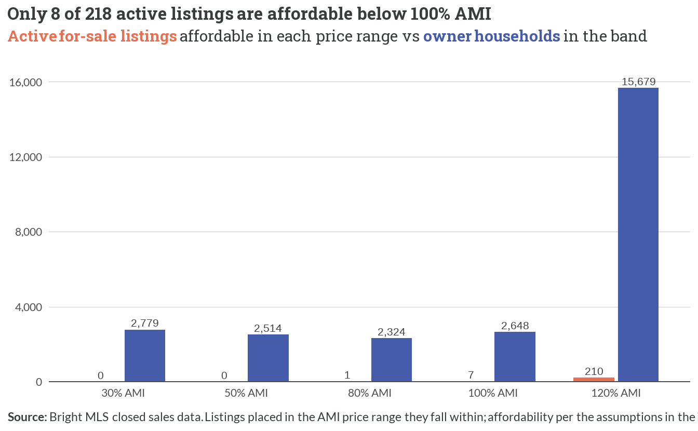

| Income limit | 1-person | 2-person | 3-person | 4-person | 5-person | 6-person | 7-person | 8-person |
|---|---|---|---|---|---|---|---|---|
| 30% AMI | 34900 | 39900 | 44900 | 49850 | 53850 | 57850 | 61850 | 65850 |
| 50% AMI | 58150 | 66450 | 74750 | 83050 | 89700 | 96350 | 103000 | 109650 |
| 80% AMI | 74800 | 85450 | 96150 | 106800 | 115350 | 123900 | 132450 | 141000 |
| 100% AMI | 116250 | 132900 | 149500 | 166100 | 179400 | 192700 | 205950 | 219250 |
| 120% AMI | 139500 | 159450 | 179350 | 199300 | 215250 | 231200 | 247150 | 263100 |
| **Source:** HUD Section 8 Income Limits, FY2026; 100/120% AMI derived from published MFI. Limits for the Washington-Arlington-Alexandria, DC-VA-MD HUD Metro FMR Area (published median family income $166,100). DC-metro 80% limit is HUD-capped to the US median; 100/120% derived from published MFI. |
5 Affordability Gaps
5.1 What sets the standard: Area Median Income
- Fauquier is part of the Washington, D.C. metro income-limit area, whose published median family income is $166,100 — far above what local wages (Figure 5.6) would suggest.
- The 80% limit sits just below the 50% limit’s usual spacing because HUD caps the 80% figure to the national median; the large jump from 80% to 100% AMI is an artifact of that cap, not a data error.
- For a 4-person household, 80% AMI is $106,800 and 100% AMI is $166,100 — the reference points behind the affordability thresholds used throughout this chapter.
5.2 What each income band can afford
| Band | Household income | Max affordable rent | Max affordable purchase price |
|---|---|---|---|
| 30% AMI | $44,900 | $1,122 | $49,983 |
| 50% AMI | $74,750 | $1,869 | $149,261 |
| 80% AMI | $96,150 | $2,404 | $220,435 |
| 100% AMI | $149,500 | $3,738 | $397,871 |
| 120% AMI | $179,350 | $4,484 | $497,149 |
| **Source:** HDAdvisors affordability calculation. Rent affordability at 30% of gross income. Purchase price assumes a 6.49% 30-year fixed rate, 10% down, a 28% front-end ratio, and $697/month taxes and insurance, for a 3-person household. |
- A 50% AMI household can afford about $1,869 in rent — below the county’s median asking rent of $2,450 — and a home of roughly $149,261, a fraction of the $650,000 median sale price.
- Affordability rises steeply with income: only at 100–120% AMI does the affordable purchase price clear a quarter-million dollars, and even 120% AMI ($497,149) stops short of the median home.
- These thresholds — not local wages — define who the market can and cannot serve; the gaps that follow measure the distance between them.
5.3 Who bears the cost: households by income and tenure

- Low-income households skew heavily toward renting: in the county’s ≤30% and 30-50% AMI bands renters are a large share of all households, while above 80% AMI owners dominate — the tenure divide is an income divide.
- Warrenton carries a higher renter share across every band, consistent with its role as the county’s principal rental submarket; Bealeton’s cells are small and are read as counts, not precise rates.
- CHAS detail sums to roughly 25,900 occupied households county-wide, the denominator behind the burden and gap figures that follow.
5.4 Cost burden over time (ACS)

- Renters are consistently the more burdened group: about 40% of renters were cost-burdened in 2024 versus 21% of owners — a gap of nearly 20 points that has held across the decade.
- Burden has edged down, not up, since 2013 (renters 44% → 40%; owners 29% → 21%), reflecting income growth and refinancing during a low-rate decade — but the levels remain high and the recent rate environment (Chapter 3) points the other way.
- Both towns run hotter than the county on renter burden: Warrenton (~55%) and Bealeton (~59%) 2024 renter points sit well above the county line, with Bealeton’s cell footnoted for reliability.
5.5 The core picture: burden is concentrated at the lowest incomes (CHAS)

- Burden collapses onto the bottom of the income ladder: at ≤30% AMI the vast majority of both renters and owners are cost-burdened — most of them severely — while above 80% AMI burden all but disappears.
- Renters are more burdened than owners within every band, and severe burden is especially concentrated among the lowest-income renters, the households with the least room to absorb a rent increase.
- Measured on the CHAS universe, county burden is 33% for renters and 20% for owners — lower than the ACS headline (Figure 5.2) because CHAS uses a different denominator; the two are reconciled in the Data & Methodology appendix.
5.6 The rental gap: too few homes for the lowest incomes

- The deepest shortfall is at the very bottom: the county has about 625 fewer rentals affordable and available to ≤30% AMI renters than there are such renter households — the households with essentially no market alternative.
- Every band runs a deficit, for a net shortfall of roughly 3,315 units — higher-income renters occupy units that would otherwise be affordable to lower-income households, a competition-down-the-ladder dynamic.
- The gap is a supply problem, not a targeting problem: even where units are nominally affordable, they are already occupied, leaving the lowest-income renters with the fewest options.
5.7 The ownership gap: almost nothing for sale below 100% AMI

- Below the 100% AMI price ceiling there is almost nothing for sale: just 8 of 218 active listings (0, 0, 1, and 7 across the 30%, 50%, 80%, and 100% AMI bands) — the for-sale market effectively excludes moderate-income buyers.
- The overwhelming majority — 210 of 218 listings — are priced only within reach of the 120% AMI band or above, mirroring the median-price gap in Table 5.2.
- Owner-household counts far exceed affordable listings in every band below the top, so first-time and lower-income buyers face a market with essentially no entry point.
5.8 The bottom line: wages don’t reach the cost of housing

- A single average local wage doesn’t cover the rent: all-jobs average pay is about $68,000, short of the $98,000 needed to afford the median rent — and sector wages like Retail Trade ($41,934) fall far further behind.
- Only a two-earner household clears the rent bar: two average local jobs ($136,000) exceed the $98,000 rent threshold — but no configuration reaches the $190,586 needed to buy the median home.
- The message is structural: the county’s wage base and its housing costs have decoupled, so even dual-income working households are priced out of ownership and the lowest-wage sectors are priced out of the market entirely.
5.9 Town spotlight & interview validation
NoteTown spotlight — Warrenton and Bealeton carry the county’s highest renter burden
Both towns run hotter than the county on renter cost burden: in 2024 roughly 55% of Warrenton renters and 59% of Bealeton renters were cost-burdened (Figure 5.2), versus 40% countywide. Warrenton’s cell is High reliability; Bealeton’s is Medium (CV 15–30%) and is read as a count-based signal, not a precise rate. As the county’s principal rental submarket (Figure 5.1), Warrenton concentrates both the renters and the burden — the same submarket where the affordable-rental deficit (Figure 5.4) bites hardest.
5.10 What the interviews said vs. what the data shows
ImportantInterview validation
- “Workers can’t afford to both work and live here.” Confirmed. A single average local wage ($68,000) falls short of the $98,000 needed to afford the median rent, and even a two-earner household ($136,000) cannot reach the $190,586 needed to buy the median home (Figure 5.6). Lower-wage sectors — Retail Trade at $41,934, Local Government at $58,079 — fall further behind, and the for-sale market offers 8 of 218 listings below 100% AMI (Figure 5.5). The wage-to-housing-cost gap is not a perception; it is the defining structural feature of Fauquier’s housing market.